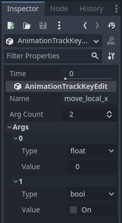
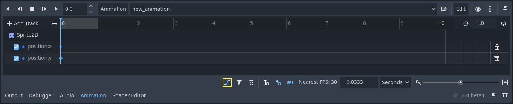
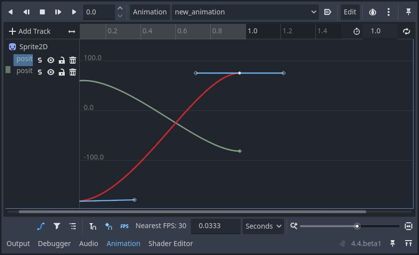
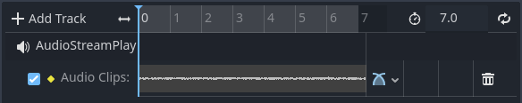
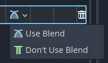
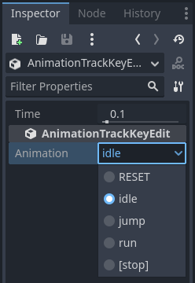

Animation Track types
This page gives an overview of the track types available for Godot's animation player node on top of the default property tracks.
See also
We assume you already read Introduction to the animation features, which covers the basics, including property tracks.

Property Track
The most basic track type. See Introduction to the animation features.
Position 3D / Rotation 3D / Scale 3D Track
These 3D transform tracks control the location, rotation, and scale of a 3D object. They make it easier to animate a 3D object's transform compared to using regular property tracks.
It is designed for animations imported from external 3D models and can reduce resource capacity through compression.
Blend Shape Track
A blend shape track is optimized for animating blend shape in MeshInstance3D.
It is designed for animations imported from external 3D models and can reduce resource capacity through compression.
Call Method Track
A call method track allow you to call a function at a precise time from within an
animation. For example, you can call queue_free() to delete a node at the
end of a death animation.
Note
The events placed on the call method track are not executed when the animation is previewed in the editor for safety.
To create such a track in the editor, click "Add Track -> Call Method Track." Then, a window opens and lets you select the node to associate with the track. To call one of the node's methods, right-click the timeline and select "Insert Key". A window opens with a list of available methods. Double-click one to finish creating the keyframe.

To change the method call or its arguments, click on the key and head to the inspector dock. There, you can change the method to call. If you expand the "Args" section, you will see a list of arguments you can edit.

To create such a track through code, pass a dictionary that contains the target method's name
and parameters as the Variant for key in Animation.track_insert_key(). The keys and
their expected values are as follows:
Key |
Value |
|---|---|
|
The name of the method as a |
|
The arguments to pass to the function as an |
# Create a call method track.
func create_method_animation_track():
# Get or create the animation the target method will be called from.
var animation = $AnimationPlayer.get_animation("idle")
# Get or create the target method's animation track.
var track_index = animation.add_track(Animation.TYPE_METHOD)
# Make the arguments for the target method jump().
var jump_velocity = -400.0
var multiplier = randf_range(.8, 1.2)
# Get or create a dictionary with the target method's name and arguments.
var method_dictionary = {
"method": "jump",
"args": [jump_velocity, multiplier],
}
# Set scene-tree path to node with target method.
animation.track_set_path(track_index, ".")
# Add the dictionary as the animation method track's key.
animation.track_insert_key(track_index, 0.6, method_dictionary, 0)
# The target method that will be called from the animation.
func jump(jump_velocity, multiplier):
velocity.y = jump_velocity * multiplier
// Create a call method track.
public void CreateAnimationTrack()
{
// Get reference to the AnimationPlayer.
var animationPlayer = GetNode<AnimationPlayer>("AnimationPlayer");
// Get or create the animation the target method will be called from.
var animation = animationPlayer.GetAnimation("idle");
// Get or create the target method's animation track.
var trackIndex = animation.AddTrack(Animation.TrackType.Method);
// Make the arguments for the target method Jump().
var jumpVelocity = -400.0;
var multiplier = GD.RandRange(.8, 1.2);
// Get or create a dictionary with the target method's name and arguments.
var methodDictionary = new Godot.Collections.Dictionary
{
{ "method", MethodName.Jump },
{ "args", new Godot.Collections.Array { jumpVelocity, multiplier } }
};
// Set scene-tree path to node with target method.
animation.TrackSetPath(trackIndex, ".");
// Add the dictionary as the animation method track's key.
animation.TrackInsertKey(trackIndex, 0.6, methodDictionary, 0);
}
// The target method that will be called from the animation.
private void Jump(float jumpVelocity, float multiplier)
{
Velocity = new Vector2(Velocity.X, jumpVelocity * multiplier);
}
Bezier Curve Track
A bezier curve track is similar to a property track, except it allows you to animate a property's value using a bezier curve.
Note
Bezier curve tracks and property tracks cannot be blended in AnimationPlayer and AnimationTree.
To create one, click "Add Track -> Bezier Curve Track". As with property tracks, you need to select a node and a property to animate. To open the bezier curve editor, click the curve icon to the right of the animation track.

In the editor, keys are represented by filled diamonds and the outlined diamonds connected to them by a line control curve's shape.
Tip
For better precision while manually working with curves, you might want to alter the zoom levels of the editor. The slider on the bottom right of the editor can be used to zoom in and out on the time axis, you can also do that with Ctrl + Shift + Mouse wheel. Using Ctrl + Alt + Mouse wheel will zoom in and out on the Y axis

While a keyframe is selected (not the handle), in the right click panel of the editor, you can select the handle mode:
Free: Allows you to orient a manipulator in any direction without affecting the other's position.
Linear: Does not allow rotation of the manipulator and draws a linear graph.
Balanced: Makes it so manipulators rotate together, but the distance between the key and a manipulator is not mirrored.
Mirrored: Makes the position of one manipulator perfectly mirror the other, including their distance to the key.

Audio Playback Track
If you want to create an animation with audio, you need to create an audio playback track. To create one, your scene must have either an AudioStreamPlayer, AudioStreamPlayer2D, or AudioStreamPlayer3D node. When creating the track, you must select one of those nodes.
To play a sound in your animation, drag and drop an audio file from the file system dock onto the animation track. You should see the waveform of your audio file in the track.

To remove a sound from the animation, you can right-click it and select "Delete Key(s)" or click on it and press the Del key.
The blend mode allows you to choose whether or not to adjust the audio volume when blending in the AnimationTree.

Animation Playback Track
Animation playback tracks allow you to sequence the animations of other animation player nodes in a scene. For example, you can use it to animate several characters in a cut-scene.
To create an animation playback track, select "New Track -> Animation Playback Track."
Then, select the animation player you want to associate with the track.
To add an animation to the track, right-click on it and insert a key. Select the key you just created to select an animation in the inspector dock.

If an animation is already playing and you want to stop it early, you can create a key and have it set to [STOP] in the inspector.
Note
If you instanced a scene that contains an animation player into your scene, you need to enable "Editable Children" in the scene tree to access its animation player. Also, an animation player cannot reference itself.